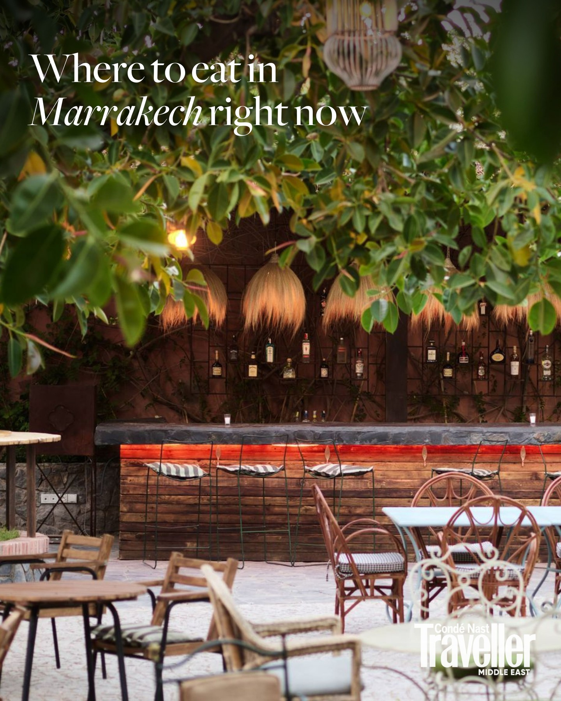
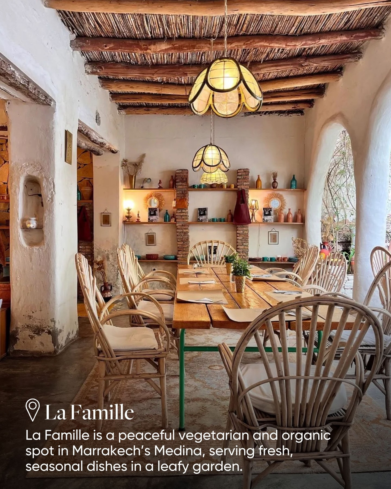
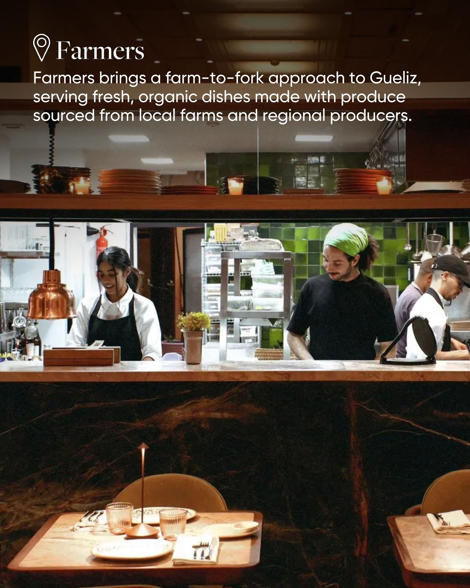
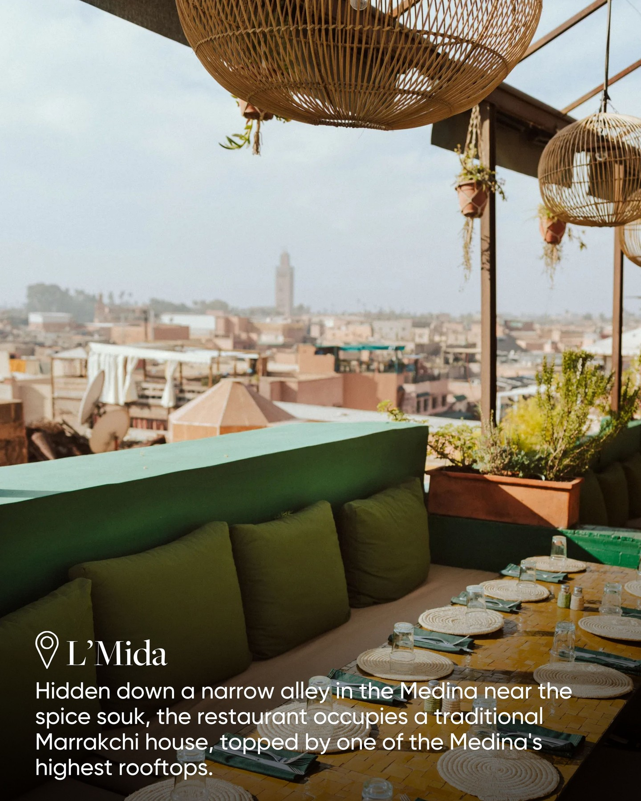
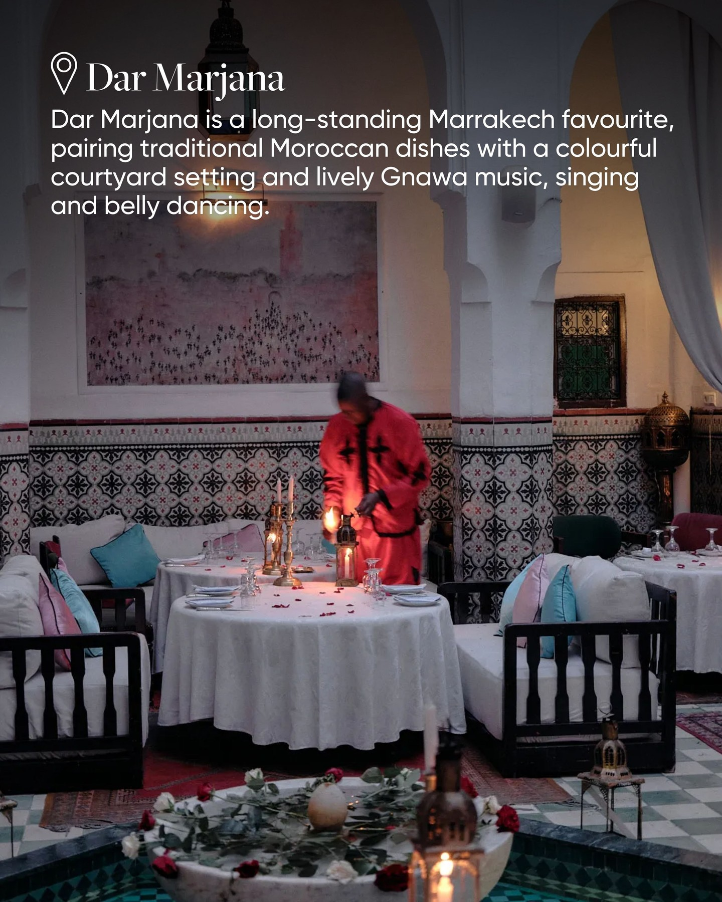
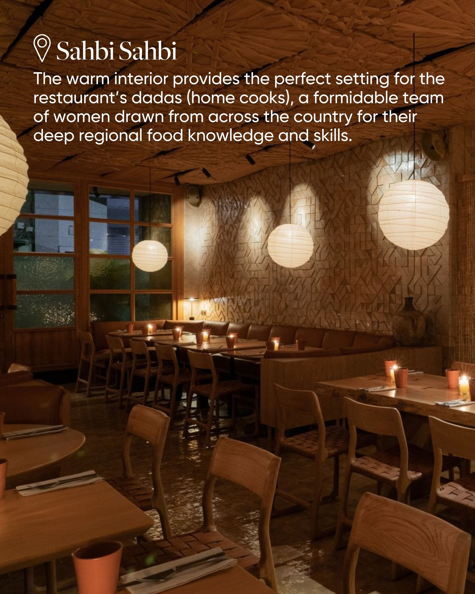

Instagram Post

A walk through Marrakech introduces you to the city’s food scene long before...
carousel (7 slides) (enriched by ClaudeClaw)
Summary
Where to eat in Marrakech right now Condé Nast Traveller ... | La Famille La Famille is a peaceful vegetarian and organi... | Farmers Farmers brings a farm-to-fork approach to Gueliz,... | L'Mida Hidden down a narrow alley in the Medina near the ... | Dar Marjana Dar Marjana is a long-standing Marrakech favo... | Sahbi Sahbi The warm interior provides the perfect settin... | Find the full list ...
Caption
A walk through Marrakech introduces you to the city’s food scene long before you sit down at a table. The smell of sfenj – airy, ring-shaped Moroccan doughnuts – frying in bubbling oil drifts from tiny stalls, while, elsewhere, lamb cooks slowly for hours, tempting you to stop for a taste. From women's charities to artist-led spaces, homestyle cooking to food-forward menus, we’ve rounded up the best places to eat in this charismatic Moroccan city. 🔗
1
Where to eat in Marrakech right now Condé Nast Traveller MIDDLE EAST
An outdoor bar and dining area is shown, featuring a wooden bar with red lighting, bar stools, bottles displayed on a wall, and various tables and chairs, all surrounded by lush green foliage.
2
La Famille La Famille is a peaceful vegetarian and organic spot in Marrakech's Medina, serving fresh, seasonal dishes in a leafy garden.
An inviting dining area with a long wooden table, wicker chairs, and decorative shelves under a thatched ceiling, with an archway leading to a garden.
3
Farmers Farmers brings a farm-to-fork approach to Gueliz, serving fresh, organic dishes made with produce sourced from local farms and regional producers.
The interior of a restaurant features dining tables in the foreground, a dark marble counter, and kitchen staff working behind it, with green tiled walls in the background.
4
L'Mida Hidden down a narrow alley in the Medina near the spice souk, the restaurant occupies a traditional Marrakchi house, topped by one of the Medina's highest rooftops.
A rooftop restaurant with green cushions and a long table set for dining overlooks a sprawling city with a distant minaret under a hazy sky.
5
Dar Marjana Dar Marjana is a long-standing Marrakech favourite, pairing traditional Moroccan dishes with a colourful courtyard setting and lively Gnawa music, singing and belly dancing.
An indoor courtyard restaurant or riad is set for dining at night, featuring tables with candles and rose petals, a person in a red robe lighting candles, patterned tiled walls, and a water feature with floating roses.
6
Sahbi Sahbi The warm interior provides the perfect setting for the restaurant's dadas (home cooks), a formidable team of women drawn from across the country for their deep regional food knowledge and skills.
The interior of a restaurant is shown with wooden tables and chairs, a long booth, paper lanterns, and textured walls, illuminated by warm lighting.
7
Find the full list at the link in bio
An overhead view of a marble dining table set with multiple plates of food including a fruit tart, ribs, green beans, pasta with seafood, breadsticks with dips, and various drinks, with several hands visible.
All slides




